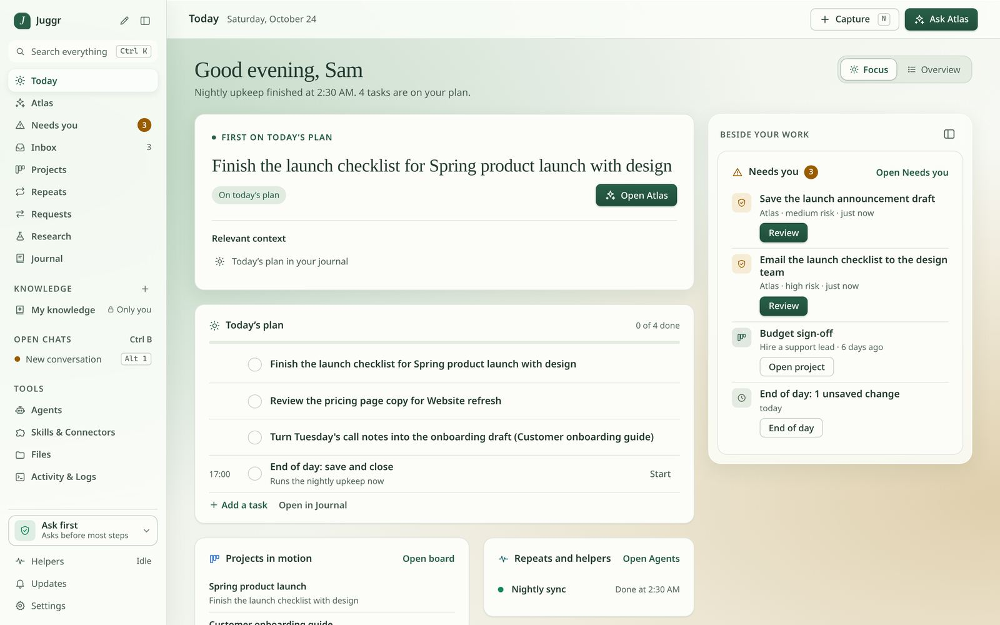
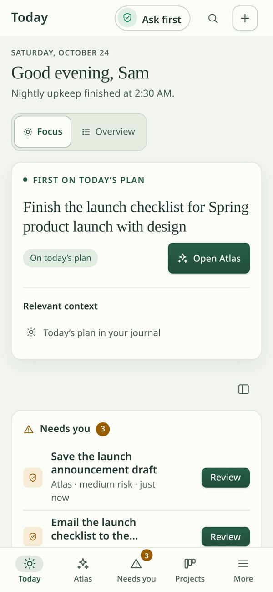
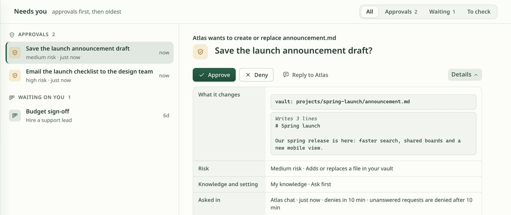
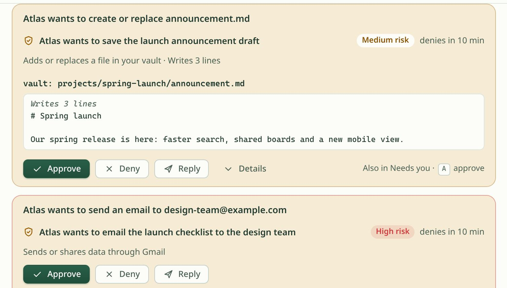
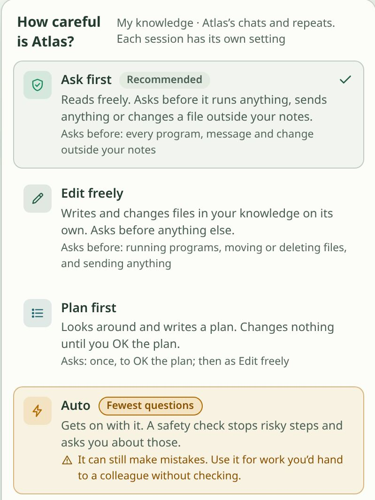
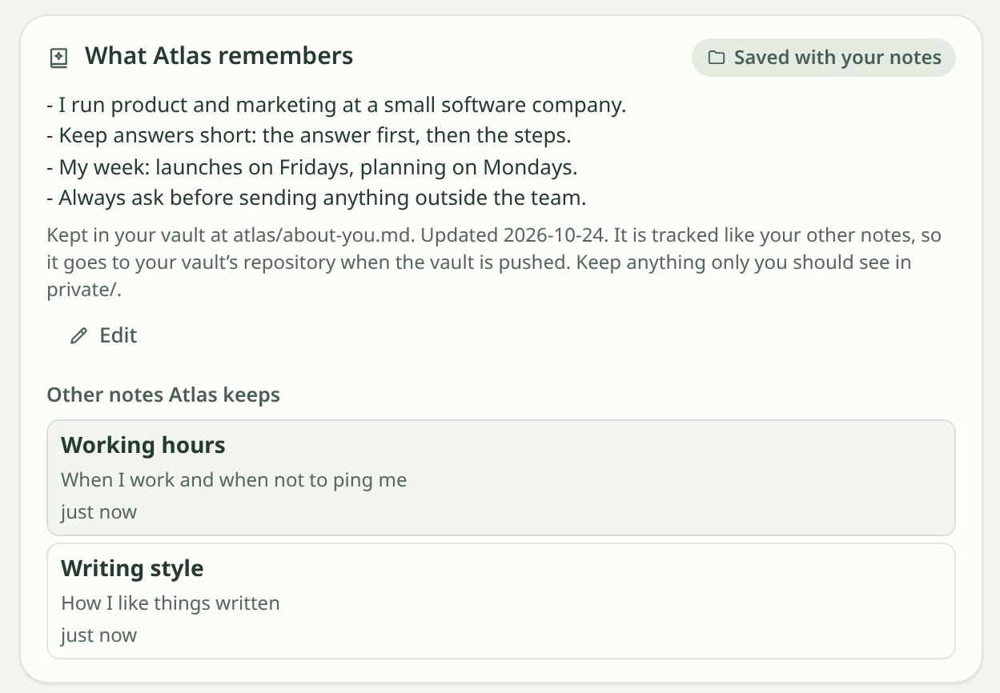
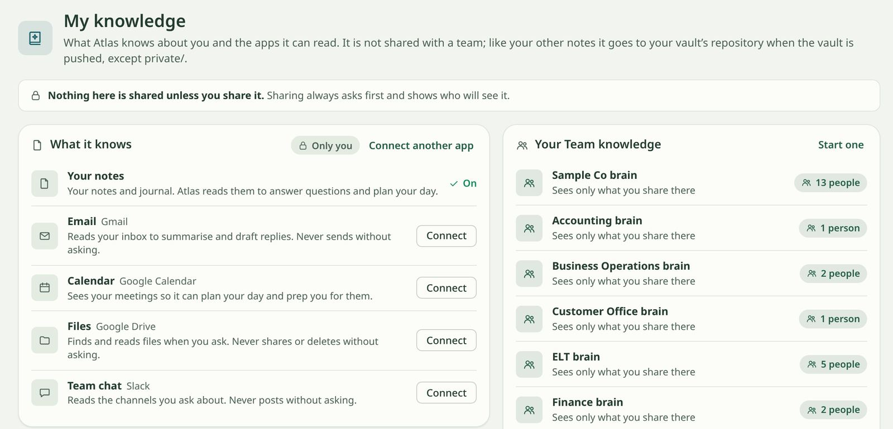
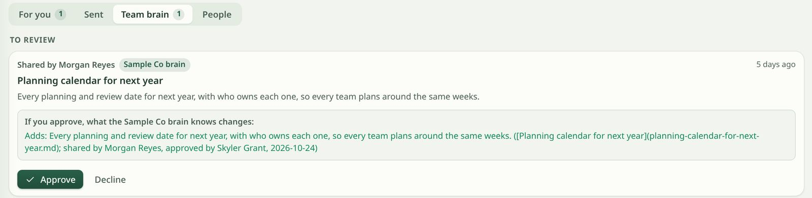
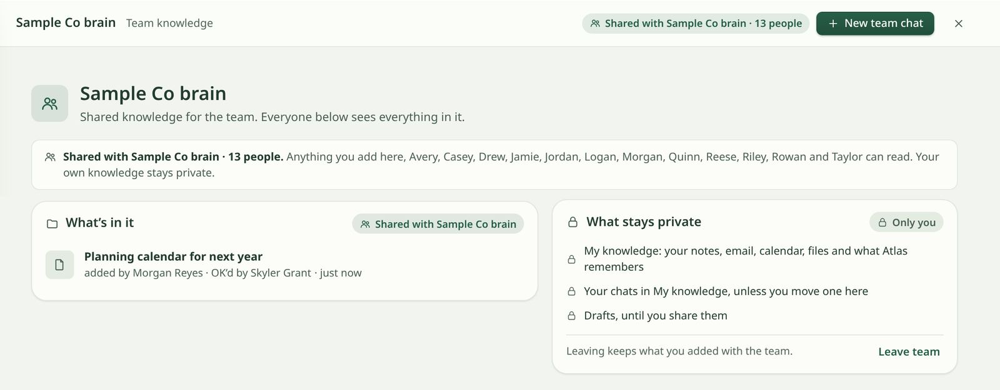
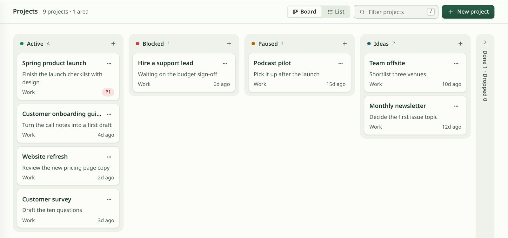

Memory
Shared knowledge bases, called Brains, for a person, a team or the whole company, so context isn't trapped in one setup.
Pre-launch · used daily · starter kit v0.8.1
The operating system for guarded AI agents at work
Memory, guardrails and an audit log, with approval gates on anything risky.


01 · The problem
Each developer sets their own rules. Nothing is shared across the team, and nothing is tracked across tools.
What one person's agent learns stays with that person.
Rules live in individual setups, one developer at a time.
There is no single record of what agents did, across tools.
02 · How it works
Juggr sits between your agents and your work, with three layers that apply to everyone on the team.
Shared knowledge bases, called Brains, for a person, a team or the whole company, so context isn't trapped in one setup.
One record of what agents did, plus approval gates on anything risky.
03 · Approvals and Atlas
Atlas is Juggr's assistant. It runs locally, with daily and weekly loops, and puts a human in charge of the actions that matter.

Risky actions wait for a yes: approve, deny, or reply to Atlas. Unanswered requests are denied, not done.
The same approval cards show up in the Atlas chat and in one Needs you list.
Atlas runs on your machine, on daily and weekly loops.
Atlas can suggest. It does not act on money.

04 · Guardrails
Four levels, and each session keeps its own. Whatever the level, every agent write still passes guard checks.
Reads freely. Asks before it runs anything, sends anything or changes a file outside your notes.
Writes and changes files in your knowledge on its own. Asks before anything else.
Looks around and writes a plan. Changes nothing until you OK the plan.
Gets on with it. A safety check stops risky steps and asks you about those.

05 · Memory

What Atlas learns about how you work is kept as plain notes in your own vault, next to the rest of your notes.
06 · Team brains
A Brain is a knowledge base for a person, a team or a company. Knowledge moves from yours, to team review, to company, step by step and never silently.
Your notes and the apps Atlas can read stay in your own space. Nothing is shared unless you share it. The team spaces you belong to sit right next to it.

A shared note waits in review. The reviewer sees exactly what the team knowledge will gain, then approves or declines.

Once approved, the note lands in the shared space with who added it and who OK'd it. Your own knowledge stays private.

Live Multi-user team review, with approval before anything is shared.
07 · Projects
Projects sit next to your plan and your approvals: active, blocked, paused and ideas, at a glance.

08 · Local-first on NVIDIA
If the machine has an NVIDIA GPU, Juggr puts it to work.
~0.4 s
Voice input runs through whisper.cpp on the local GPU, at about 0.4 seconds per clip.
Open models
Planned: running open models on rented NVIDIA GPUs.
09 · Plans
Pre-launch, but already a working product used daily. Pricing for paid tiers is not set yet.
Free
The way in. Current version: v0.8.1.
Paid · pricing to come
Paid tier. Details to come.
Paid · pricing to come
Paid tier for teams. Details to come.
Implementation
Done-for-you implementation for businesses.
Juggr is pre-launch. If your team runs AI agents at work and wants shared memory, team policy and one audit log, let's talk.
Sylvain Nehme, founder · Habibi Capital